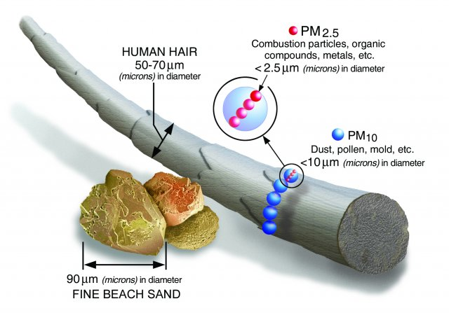

What is PM2.5?
This is a measure of the concentration of fine inhalable solid particles or droplets, with diameters that are generally 2.5 micrometers and smaller. How small is 2.5 micrometers? Think about a single hair from your head. The average human hair is about 70 micrometers in diameter – making it 30 times larger than the largest fine particle.
What is the source of PM2.5?
The main source of air pollution including PM2.5 is human activities like industry and transportation. There are natural sources, which can be important in certain situations, but the main cause is our activities.
Why is high PM2.5 dangerous?
Any kind of air pollution is dangerous to our health. PM2.5 is the measure of the concentrations of particles, which not only able to get in our respiratory system, but also able to get into our bloodstream. The effect can be far reaching from asthma to even heart attack.
Where can I get more information?
The following websites give you more information: